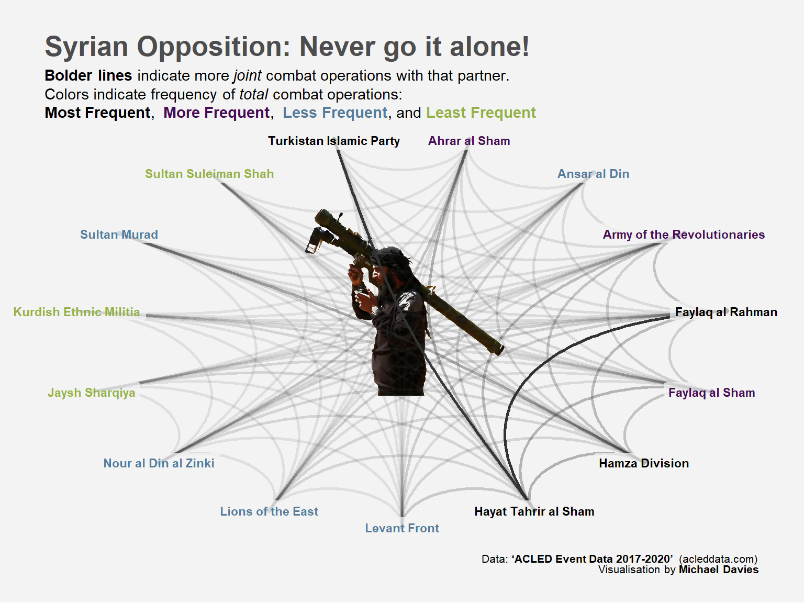

Code
library(tidyverse)
library(ggraph)
library(tidygraph)
library(rsvg)
library(cowplot)
library(ggtext)
library(igraph)
library(devtools)Conflict makes for strange bedfellows
Michael L. Davies
August 22, 2023
During the height of the Syrian civil war, many of us watching from afar were puzzled when “moderate” insurgent groups would jump into bed (or alliances) with hardliners or jihadists. The Syrian conflict had hundreds, maybe thousands, of armed groups forming various kinds of alliances, then divorcing only to reconcile again.
A lot is made of the role of ideology when armchair commanders (like myself) comment as these disasters play out. On the other hand, alliances could be a pragmatic choice. By aggregating combat power, armed groups might increase their chances of survival—even if only to turn on each other at a later stage.
In fact, I recently read a compelling argument on this topic: “Alliance Formation in Civil Wars” by Fotini Christia.1 In this book, Christia states: “It would be natural to suppose that warring groups form alliances based on shared identity considerations—such as Christian groups allying with Christian groups or Muslim groups with their fellow co-religionists—but this is not what we see.”
So, with that motivation, I decided to explore what we could find among Syrian armed groups. When coalitions of Syrian armed groups engaged in battles, they frequently partnered with several groups. So, my question was: would groups tolerate fighting alongside other groups that are ideological enemies? So, I’m focusing on pairwise relationships, even when there are many groups in the alliance.
I came across the Armed Conflict Location & Event Data Project(ACLED) a few years ago. What an amazing resource. ACLED is a disaggregated data collection, analysis, and crisis mapping project. The ACLED team collects real time and historical data on political violence and protest events in nearly 100 countries. In short, it’s awesome.2
ACLED data is robust, with many columns and over many years. In this dataset, actor (along with assoc_actor_1 acts in some (usually bad) way on actor2. So, I’m only concerned with the actor1 and assoc_actor_1 columns. Let’s just take a quick peak:
| year | event_date | event_type | actor1 | assoc_actor_1 |
|---|---|---|---|---|
| 2021 | 2021-02-05 | Battles | Operation Peace Spring | JWS: Syrian National Army; Military Forces of Turkey (2016-) |
| 2021 | 2021-02-05 | Battles | Opposition Rebels (Syria) | Military Forces of Turkey (2016-) |
| 2021 | 2021-02-05 | Explosions/Remote violence | Al Fath Al Mubeen Operation Room | Opposition Rebels (Syria) |
| 2021 | 2021-02-05 | Battles | Military Forces of Syria (2000-) | Militia (Pro-Government) |
| 2021 | 2021-02-04 | Explosions/Remote violence | Opposition Rebels (Syria) | Military Forces of Turkey (2016-) |
I need select the columns of interest and then filter down to battle related events (filtering out Protests, Riots, and Violence against civilians)
Here’s the difficult part. The reduced ACLED data looks akin to this:
| actor1 | assoc_actor_1 |
|---|---|
| A | B |
| A | B; C |
| B | C; D; E |
For what I’m interested in, I need to get the pairwise combinations. So, I need to work out and test the code to accomplish this. A huge thanks to Dusty Turner.3 In fact, this chunk is largely thanks to his generosity.
#| # Separate assoc actors to get all pairwise partnerships'
df <-
test |>
# use only actors with multiple associated actors
filter(str_detect(assoc_actor_1, ";")) |>
separate_rows(assoc_actor_1, sep = ";") |>
mutate(assoc_actor_1 = str_squish(assoc_actor_1)) |>
pivot_longer(actor1:assoc_actor_1) |>
select(value) |>
distinct(value) |>
mutate(value2 = value) |>
expand(value, value2) |>
filter(value !=value2) |>
mutate(helper = str_c(value,value2)) |>
rowwise() |>
mutate(helper = str_c(str_sort(unlist(str_split(helper, ""))),collapse = "")) |>
distinct(helper,.keep_all = T) |>
select(-helper) |>
rename(actor1 = value, assoc_actor_1 = value2)
# bind back with actors that don't have multiple assoc actors
test |>
filter(!str_detect(assoc_actor_1, ";")) |>
bind_rows(df) |>
knitr::kable()| actor1 | assoc_actor_1 |
|---|---|
| A | B |
| A | B |
| A | C |
| A | D |
| A | E |
| B | C |
| B | D |
| B | E |
| C | D |
| C | E |
| D | E |
That looks good! Let’s apply it to the ACLED data.
# Separate assoc actors to get all pairwise partnerships'
df_separate <-
df_acled_syr |>
# use only actors with multiple associated actors
filter(str_detect(assoc_actor_1, ";")) |>
separate_rows(assoc_actor_1, sep = ";") |>
mutate(assoc_actor_1 = str_squish(assoc_actor_1)) |>
pivot_longer(actor1:assoc_actor_1) |>
select(value) |>
distinct(value) |>
mutate(value2 = value) |>
expand(value, value2) |>
filter(value !=value2) |>
mutate(helper = str_c(value,value2)) |>
rowwise() |>
mutate(helper = str_c(str_sort(unlist(str_split(helper, ""))),collapse = "")) |>
distinct(helper,.keep_all = T) |>
select(-helper) |>
rename(actor1 = value, assoc_actor_1 = value2)
# bind back with actors that don't have multiple assoc actors
reshaped_df <- df_acled_syr |>
filter(!str_detect(assoc_actor_1, ";")) |>
bind_rows(df_separate)
Ok, I have to confess. This next part stumped me and took forever. First, a huge shout out to Wikipedia contributors. There are soooo many actors in the dataset. I spend much more time than intended trying to consolidate them, constantly referencing Wikipedia to figure out what’s going on.
Second, I needed to clean and consolidate the actors, and then remove the non-opposition groups as well as the non-armed-opposition groups. I tried several ways to make happen much more parsimoniously with sapply and purrr::map and a two-column lookup table, but it beat me. If you have suggestions, I’m eager to hear them.
# create a lookup table for groups to remove
remove_groups <-
c("Military Forces", "Police Forces",
"Operations Room", "Opposition Rebels",
"Alliance/Named Operation", "Tribal",
"Military Council", "Communal Militias",
"Civilians", "SDF", "Islamic State")
df_acled_actors <-
reshaped_df |>
mutate(
across(
actor1:assoc_actor_1,
~ case_when(
str_detect(.x, "Military Forces|Government|Allied Syrian") ~ "Military Forces",
str_detect(.x, "Unidentified Armed|Opposition Rebels|Islamist|Sunni Muslim|JSH") ~ "Opposition Rebels",
str_detect(.x, "Police Forces") ~ "Police Forces",
str_detect(.x, "HXP|QSD|YPG|YPJ|Liberation Army of Afrin|Menbij Internal|Asayish|Syriac") ~ "SDF",
str_detect(.x, "HTS|JFS|Jabhat Fateh al Sham") ~ "Hayat Tahrir al Sham",
str_detect(.x, "Hamza Division|Hamza Brigade") ~ "Hamza Division",
str_detect(.x, "AAS:") ~ "Ahrar al Sham",
str_detect(.x, "Al Sham Corps|Al Sham Division") ~ "Faylaq al Sham",
str_detect(.x, "HNDZ") ~ "Nour al Din al Zinki",
str_detect(.x, "Sharqiya Army") ~ "Jaysh Sharqiya",
str_detect(.x, "Liwa al Aqsa") ~ "Jund al Aqsa",
str_detect(.x, "FaR:") ~ "Faylaq al Rahman",
str_detect(.x, "JaS:") ~ "Levant Front",
str_detect(.x, "Sultan Suleiman Shah") ~ "Sultan Suleiman Shah",
str_detect(.x, "Operations Room") ~ "Operations Room",
str_detect(.x, "Operation Room") ~ "Operations Room",
str_detect(.x, "Wa Harredh al Moa'mineen") ~ "Operations Room",
str_detect(.x, "JWS:|JTW:|JTS:|Euphrates Shield|Peace Spring") ~ "Alliance/Named Operation",
str_detect(.x, "Islamic State") ~ "Islamic State",
str_detect(.x, "Tribal") ~ "Tribal",
str_detect(.x, "Military Council") ~ "Military Council",
str_detect(.x, "TIP:") ~ "Turkistan Islamic Party",
str_detect(.x, "Communal") ~ "Communal Militias",
str_detect(.x, "Kurdish Ethnic") ~ "Kurdish Ethnic Militia",
str_detect(.x, "JaT:") ~ "Army of the Revolutionaries",
str_detect(.x, "Sultan Murad") ~ "Sultan Murad",
str_detect(.x, "Ansar al Din") ~ "Ansar al Din",
str_detect(.x, "JOS:") ~ "Lions of the East",
str_detect(.x, "LAS") ~ "Northern Storm Brigade",
str_detect(.x, "Civilians|Protesters|Rioters|Aid Workers|Women|Farmers|Refugees|Prisoners|Journalists|") ~ "Civilians",
TRUE ~ .x
))) |>
# remove civilans, state forces or unidentified groups
filter(!actor1 %in% remove_groups,
!assoc_actor_1 %in% remove_groups,
actor1 != assoc_actor_1) |>
# Get the top/most groups by number of operations
mutate(actor1 = fct_lump(actor1, 10),
assoc_actor_1 = fct_lump(assoc_actor_1, 15)) |>
filter(actor1 != "Other",
assoc_actor_1 != "Other")
Let’s check out what the numbers look like for the top 10 most operationally-active groups. How many joint (aka partnered) operations does each group conduct - measured as a percentage of overall joint operations?
library(DT)
datatable(df_acled_actors %>%
pivot_longer(cols = actor1:assoc_actor_1,
names_to = "cols",
values_to = "Name") %>%
group_by(Name) %>%
summarize(`Partnered Ops` = n()) %>%
mutate(Percent = round(`Partnered Ops`/sum(`Partnered Ops`),2),
Percent = scales::percent(Percent)) %>%
ungroup() %>%
arrange(desc(`Partnered Ops`)))
Clearly, we expect Hayat Tahrir al-Sham to be a prominent player.
Now to prep the data for graphing…
# create nodes with count of times each actor appears in dataset
df_nodes <-
df_acled_actors |>
pivot_longer(cols = actor1:assoc_actor_1,
names_to = "cols",
values_to = "Name") |>
group_by(Name) |>
summarize(count = n()) |>
ungroup() |>
#mutate(countG = cut(count, breaks = c(-Inf, 21, 24, 43, Inf))) |>
mutate(countG = case_when(
count < 21 ~ "Least",
count < 25 ~ "Less",
count < 44 ~ "More",
TRUE ~ "Most"
))
# from original df, weight is the count of how often the two actors work together
# igraph looks for "from", "to", and "weight"
df_edges <-
df_acled_actors |>
count(actor1,assoc_actor_1) |>
rename(weight = n,
from = actor1,
to = assoc_actor_1)
graph <-
graph_from_data_frame(
df_edges,
vertices = df_nodes)And at last, let’s generate a pairwise network plot. Let’s see who partnered with whom.
graphed <-
graph |>
ggraph(layout = 'linear',
circular = TRUE) +
ggraph::geom_edge_arc(
aes(alpha = weight),
width = 1,
show.legend = FALSE,
color = "grey20"
) +
ggraph::geom_node_point(aes(color = countG)) +
ggraph::geom_node_label(
aes(label = name,
color = countG),
alpha = .75,
label.size = NA,
fill = "#F3F3F3",
size = 3,
repel = F,
fontface = "bold"
) +
labs(
title = "Syrian Opposition: Never go it alone!",
subtitle = "<b>Bolder lines</b> indicate more <i>joint</i> combat operations with that partner.
<br>Colors indicate frequency of <i>total</i> combat operations:
<br><b style='color:black'> Most Frequent</b>,
<b style='color:#450D54'> More Frequent</b>,
<b style='color:#557C9B'> Less Frequent</b>, and
<b style='color:#94B147'>Least Frequent</b>",
caption = "Data: <b>'ACLED Event Data 2017-2020'</b> (acleddata.com)<br> Visualisation by <b>Michael Davies</b>"
) +
theme_void() +
theme(
# margins: top, right, bottom, and left
plot.margin = margin(0.7, 0.7, 0.7, 0.7, "cm"),
plot.title = element_text(size = 20, color = "grey30", face = "bold"),
plot.title.position = 'plot',
plot.subtitle = element_markdown(lineheight = 1.2),
plot.caption = element_markdown(size = 8),
plot.caption.position = 'plot',
plot.background = element_rect(color = NA, fill = NA),
legend.position = "none",
) +
scale_color_manual(values = c("#94B147", "#557C9B", "#450D54", "black")) +
coord_fixed(ratio = 0.6, clip = "off")
library(magick)
img <-
image_read("jihadi.PNG") |>
image_resize("570x380") |>
image_transparent("grey", fuzz = 35)
ggdraw() +
draw_plot(
ggplot() +
theme_void() +
theme(
plot.background = element_rect(color = NA, fill = "#F3F3F3")
)) +
draw_image(interpolate = F,
img,
scale = .35,
x = 0,
y = 0) +
draw_plot(graphed) 
Ahhh the tangled web they weave. I know I’ve been mixing metaphors.
I supposed I should have used the colors to signify ideology so that we can see if ideology and parnterships “travel well together.” However, I became interested in how the frequency of operations and partnership might reflect battlefield success. For instance, Hayat Tahrir al-Sham, by all accounts, rose to be the most dominant opposition group. This is reflected in the fact that they conducted the most operations overall. Notably, however, they seldom engaged in an operation on their own. They engaged in the most frequent “joint operations” - despite being consider hardliners, jihadists, and ISIS offshoots.4
Maybe the key to insurgent survival is - never go it alone.
Fotini Christia, “Alliance Formation in Civil Wars”.↩︎
Data from The Armed Conflict Location & Event Data Project (ACLED) was accessed spring of 2021. Given the hieght of the Syrian conflict occured before this time, I chose to re-use this data for this project.↩︎
Major Dusty Turner, U.S. Army is a monster coder and overall big brain. I’ve leaned on him for a number of problems. He consistently digs me out of a hole – all while cracking a joke.↩︎
The Armed Conflict Location & Event Data Project (ACLED), Actor Profile: Hayat Tahrir al-Sham (HTS) 26 July 2023.↩︎